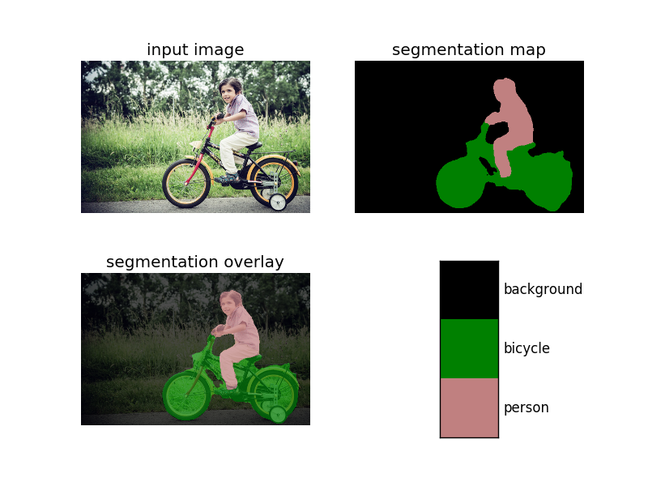

使用TensorFlow DeepLab进行语义分割
参考 https://github.com/tensorflow/models/tree/master/research/deeplab
使用 TensorFlow DeepLab 进行语义分割

准备
文件结构
这里以 PASCAL VOC 2012 为例，参考官方推荐的文件结构：
1
2
3
4
5
6
7
8
9
10
11
12
13
14
15
16
17
18
19
20
21
22
23
24
25
26
27
28
29
30
31
32
33
34
35
36
37
38
39deeplab/datasets/pascal_voc_seg
├── exp
│ └── train_on_train_set
│ ├── eval
│ │ └── events.out.tfevents....
│ ├── export
│ │ └── frozen_inference_graph.pb
│ ├── train
│ │ ├── checkpoint
│ │ ├── events.out.tfevents....
│ │ ├── graph.pbtxt
│ │ ├── model.ckpt-0.data-00000-of-00001
│ │ ├── model.ckpt-0.index
│ │ ├── model.ckpt-0.meta
│ │ └── ...
│ └── vis
│ ├── graph.pbtxt
│ ├── raw_segmentation_results
│ └── segmentation_results
├── init_models
│ └── deeplabv3_pascal_train_aug
│ ├── frozen_inference_graph.pb
│ ├── model.ckpt.data-00000-of-00001
│ └── model.ckpt.index
├── tfrecord
│ ├── ....tfrecord
│ └── ...
└── VOCdevkit
└── VOC2012
├── Annotations
├── ImageSets
│ ├── Action
│ ├── Layout
│ ├── Main
│ └── Segmentation
├── JPEGImages
├── SegmentationClass
├── SegmentationClassRaw
└── SegmentationObject安装 TensorFlow
参考 https://www.tensorflow.org/install/ ，安装 TensorFlow v1.5.0 或更新的版本。
如果操作系统、GPU 型号、Python 版本号等配置跟官方一致，可直接使用官网提供的安装包安装。
编译源码时注意 bazel 可能并不能总是获取
$LD_LIBRARY_PATH，如有报错，可以尝试添加参数action_env：
1
bazel build --config=opt --config=cuda tensorflow/tools/pip_package:build_pip_package --action_env="LD_LIBRARY_PATH=${LD_LIBRARY_PATH}"
配置 TensorFlow Models
- 下载 TensorFlow Models
1
git clone https://github.com/tensorflow/models.git
- 添加
$PYTHONPATH
1
2# From tensorflow/models/research/
export PYTHONPATH=$PYTHONPATH:`pwd`:`pwd`/slim- 测试
1
2# From tensorflow/models/research/
python deeplab/model_test.py若成功，显示
OK。准备数据
这里以
PASCAL VOC 2012为例。参考 https://github.com/tensorflow/models/blob/master/research/deeplab/g3doc/pascal.md
运行以下代码即可：
1
2# From deeplab/datasets/
sh download_and_convert_voc2012.sh实际上，该脚本执行了以下操作：
- 下载并解压
1
2
3# From deeplab/datasets/pascal_voc_seg/
wget http://host.robots.ox.ac.uk/pascal/VOC/voc2012/VOCtrainval_11-May-2012.tar
tar -xf VOCtrainval_11-May-2012.tar- 移除 ground-truth 中的 colormap
1
2
3
4
5
6
7# From deeplab/datasets/
PASCAL_ROOT="pascal_voc_seg/VOCdevkit/VOC2012"
SEG_FOLDER="${PASCAL_ROOT}/SegmentationClass"
SEMANTIC_SEG_FOLDER="${PASCAL_ROOT}/SegmentationClassRaw"
python ./remove_gt_colormap.py \
--original_gt_folder="${SEG_FOLDER}" \
--output_dir="${SEMANTIC_SEG_FOLDER}"- 生成 TFRecord
1
2
3
4
5
6
7
8
9
10
11# From deeplab/datasets/
OUTPUT_DIR="pascal_voc_seg/tfrecord"
mkdir -p "${OUTPUT_DIR}"
IMAGE_FOLDER="${PASCAL_ROOT}/JPEGImages"
LIST_FOLDER="${PASCAL_ROOT}/ImageSets/Segmentation"
python ./build_voc2012_data.py \
--image_folder="${IMAGE_FOLDER}" \
--semantic_segmentation_folder="${SEMANTIC_SEG_FOLDER}" \
--list_folder="${LIST_FOLDER}" \
--image_format="jpg" \
--output_dir="${OUTPUT_DIR}"（可选）下载模型
官方提供了不少预训练模型（ https://github.com/tensorflow/models/blob/master/research/deeplab/g3doc/model_zoo.md ），
这里以
deeplabv3_pascal_train_aug_2018_01_04以例。1
2
3
4
5# From deeplab/datasets/pascal_voc_seg/
mkdir init_models
cd init_models
wget http://download.tensorflow.org/models/deeplabv3_pascal_train_aug_2018_01_04.tar.gz
tar zxf ssd_mobilenet_v1_coco_11_06_2017.tar.gz
训练
如果使用现有模型进行预测则不需要训练。
训练
新建
deeplab/datasets/pascal_voc_seg/exp/train_on_train_set/train.sh，内容如下：1
2
3
4
5
6
7
8
9
10
11
12
13
14
15
16
17
18
19mkdir -p logs/
now=$(date +"%Y%m%d_%H%M%S")
python ../../../../train.py \
--logtostderr \
--train_split="train" \
--model_variant="xception_65" \
--atrous_rates=6 \
--atrous_rates=12 \
--atrous_rates=18 \
--output_stride=16 \
--decoder_output_stride=4 \
--train_crop_size=513 \
--train_crop_size=513 \
--train_batch_size=4 \
--training_number_of_steps=10 \
--fine_tune_batch_norm=false \
--tf_initial_checkpoint="../../init_models/deeplabv3_pascal_train_aug/model.ckpt" \
--train_logdir="train/" \
--dataset_dir="../../tfrecord/" 2>&1 | tee logs/train_$now.txt &进入
deeplab/datasets/pascal_voc_seg/exp/train_on_train_set/，运行
sh train.sh即可训练。验证
可一边训练一边验证，注意使用其它的GPU或合理分配显存。
新建
deeplab/datasets/pascal_voc_seg/exp/train_on_train_set/eval.sh，内容如下：1
2
3
4
5
6
7
8
9
10
11
12
13
14
15python ../../../../eval.py \
--logtostderr \
--eval_split="val" \
--model_variant="xception_65" \
--atrous_rates=6 \
--atrous_rates=12 \
--atrous_rates=18 \
--output_stride=16 \
--decoder_output_stride=4 \
--eval_crop_size=513 \
--eval_crop_size=513 \
--checkpoint_dir="train/" \
--eval_logdir="eval/" \
--dataset_dir="../../tfrecord/" &
# --max_number_of_evaluations=1 &进入
deeplab/datasets/pascal_voc_seg/exp/train_on_train_set/，运行
CUDA_VISIBLE_DEVICES="1" sh eval.sh即可验证（这里指定了第二个 GPU）。可视化 log
可一边训练一边可视化训练的 log，访问
http://localhost:6006/即可看到 loss 等的变化。1
2# From deeplab/datasets/pascal_voc_seg/exp/train_on_train_set
tensorboard --logdir train/可视化验证的 log，可看到
miou_1.0的变化，这里指定了另一个端口。1
2# From deeplab/datasets/pascal_voc_seg/exp/train_on_train_set
tensorboard --logdir eval/ --port 6007或同时可视化训练与验证的log：
1
2# From deeplab/datasets/pascal_voc_seg/exp/train_on_train_set
tensorboard --logdir .可视化分割结果
可一边训练一边可视化分割结果。
新建
deeplab/datasets/pascal_voc_seg/exp/train_on_train_set/vis.sh，内容如下：1
2
3
4
5
6
7
8
9
10
11
12
13
14
15python ../../../../vis.py \
--logtostderr \
--vis_split="val" \
--model_variant="xception_65" \
--atrous_rates=6 \
--atrous_rates=12 \
--atrous_rates=18 \
--output_stride=16 \
--decoder_output_stride=4 \
--vis_crop_size=513 \
--vis_crop_size=513 \
--checkpoint_dir="train/" \
--vis_logdir="vis/" \
--dataset_dir="../../tfrecord/" &
# --max_number_of_evaluations=1 &进入
deeplab/datasets/pascal_voc_seg/exp/train_on_train_set/，运行
sh vis.sh即可生成分割结果，vis/segmentation_results/里有彩色化的分割结果，vis/raw_segmentation_results/里有原始的分割结果。
测试
导出模型
训练完成后得到一些 checkpoint 文件在
deeplab/datasets/pascal_voc_seg/exp/train_on_train_set/train/中，如：- graph.pbtxt
- model.ckpt-1000.data-00000-of-00001
- model.ckpt-1000.info
- model.ckpt-1000.meta
其中 meta 文件保存了 graph 和 metadata，ckpt 文件保存了网络的 weights。
而进行预测时只需模型和权重，不需要 metadata，故可使用官方提供的脚本生成推导图。
新建
deeplab/datasets/pascal_voc_seg/exp/train_on_train_set/export_model.sh，内容如下：1
2
3
4
5
6
7
8
9
10
11
12
13
14python ../../../../export_model.py \
--logtostderr \
--checkpoint_path="train/model.ckpt-$1" \
--export_path="export/frozen_inference_graph-$1.pb" \
--model_variant="xception_65" \
--atrous_rates=6 \
--atrous_rates=12 \
--atrous_rates=18 \
--output_stride=16 \
--decoder_output_stride=4 \
--num_classes=21 \
--crop_size=513 \
--crop_size=513 \
--inference_scales=1.0进入
deeplab/datasets/pascal_voc_seg/exp/train_on_train_set/，运行
sh export_model.sh 1000即可导出模型export/frozen_inference_graph-1000.pb。测试图片
运行
deeplab_demo.ipynb并修改其中的各种路径即可。或自写 inference 脚本，如
deeplab/datasets/pascal_voc_seg/exp/train_on_train_set/infer.py1
2
3
4
5
6
7
8
9
10
11
12
13
14
15
16
17
18
19
20
21
22
23
24
25
26
27
28
29
30
31
32
33
34
35
36
37
38
39
40
41
42
43
44
45
46
47
48
49
50
51
52
53
54
55
56
57
58
59
60
61
62
63
64
65
66
67
68
69
70
71
72
73
74
75
76
77
78
79
80
81
82
83
84
85
86
87
88
89
90
91
92
93
94
95
96
97
98
99
100
101
102
103
104import sys
sys.path.append('../../../../utils/')
from matplotlib import pyplot as plt
import numpy as np
from PIL import Image
import tensorflow as tf
import get_dataset_colormap
LABEL_NAMES = np.asarray([
'background', 'aeroplane', 'bicycle', 'bird', 'boat', 'bottle', 'bus',
'car', 'cat', 'chair', 'cow', 'diningtable', 'dog', 'horse', 'motorbike',
'person', 'pottedplant', 'sheep', 'sofa', 'train', 'tv'
])
FULL_LABEL_MAP = np.arange(len(LABEL_NAMES)).reshape(len(LABEL_NAMES), 1)
FULL_COLOR_MAP = get_dataset_colormap.label_to_color_image(FULL_LABEL_MAP)
class DeepLabModel(object):
"""Class to load deeplab model and run inference."""
INPUT_TENSOR_NAME = 'ImageTensor:0'
OUTPUT_TENSOR_NAME = 'SemanticPredictions:0'
INPUT_SIZE = 513
def __init__(self, model_path):
"""Creates and loads pretrained deeplab model."""
self.graph = tf.Graph()
with open(model_path) as fd:
graph_def = tf.GraphDef.FromString(fd.read())
with self.graph.as_default():
tf.import_graph_def(graph_def, name='')
self.sess = tf.Session(graph=self.graph)
def run(self, image):
"""Runs inference on a single image.
Args:
image: A PIL.Image object, raw input image.
Returns:
resized_image: RGB image resized from original input image.
seg_map: Segmentation map of `resized_image`.
"""
width, height = image.size
resize_ratio = 1.0 * self.INPUT_SIZE / max(width, height)
target_size = (int(resize_ratio * width), int(resize_ratio * height))
resized_image = image.convert('RGB').resize(target_size,
Image.ANTIALIAS)
batch_seg_map = self.sess.run(
self.OUTPUT_TENSOR_NAME,
feed_dict={
self.INPUT_TENSOR_NAME: [np.asarray(resized_image)]
})
seg_map = batch_seg_map[0]
return resized_image, seg_map
def vis_segmentation(image, seg_map):
plt.figure()
plt.subplot(221)
plt.imshow(image)
plt.axis('off')
plt.title('input image')
plt.subplot(222)
seg_image = get_dataset_colormap.label_to_color_image(
seg_map, get_dataset_colormap.get_pascal_name()).astype(np.uint8)
plt.imshow(seg_image)
plt.axis('off')
plt.title('segmentation map')
plt.subplot(223)
plt.imshow(image)
plt.imshow(seg_image, alpha=0.7)
plt.axis('off')
plt.title('segmentation overlay')
unique_labels = np.unique(seg_map)
ax = plt.subplot(224)
plt.imshow(
FULL_COLOR_MAP[unique_labels].astype(np.uint8),
interpolation='nearest')
ax.yaxis.tick_right()
plt.yticks(range(len(unique_labels)), LABEL_NAMES[unique_labels])
plt.xticks([], [])
ax.tick_params(width=0)
plt.show()
if __name__ == '__main__':
if len(sys.argv) < 3:
print('Usage: python {} image_path model_path'.format(sys.argv[0]))
exit()
image_path = sys.argv[1]
model_path = sys.argv[2]
model = DeepLabModel(model_path)
orignal_im = Image.open(image_path)
resized_im, seg_map = model.run(orignal_im)
vis_segmentation(resized_im, seg_map)运行以下命令即可：
1
2
3
4# From deeplab/datasets/pascal_voc_seg/exp/train_on_train_set/
python infer.py \
../../../../g3doc/img/image1.jpg \
export/frozen_inference_graph.pb运行结果：
